写真管理システム｜責務整理
Mediaを一覧し、profile keyで生成物を選んで添付。原本は明示取得。standard／thumbnailを標準同梱し、custom keyも同じ仕組みで扱います。以下は実装前のレビュー案です。
変換形式・processor・低資源実行の詳細は Core Worker仕様骨子、延期項目はやりたいことリストを参照。
Photo App
一つのアプリ内に、2つのHTTPクライアント機能。
Viewer
Mediaの一覧・詳細・標準化済み写真／動画を表示。
Uploader
原本を送信し、進捗を表示。
Share API
HTTPサーバー。共有の作成・参照・解除を提供。
Searcher
Search APIがHTTP検索を提供。Index WorkerがCoreから更新・削除を取得し、共有Search Indexを更新。
Core
Core API、Core Worker、File Serverは同じCore責務内の別プロセス。APIはmetadataとfile URL、File Serverはbytes、Workerは非同期処理を担い、独立してスケールできます。
依存先・プロトコル（レビュー案）
矢印は呼び出す側 → 依存先。File ServerはHDDをread-onlyで参照し、画像・動画・原本をCore API経由せず配信します。

横スクロール可 · 図を単体表示 · Mermaidソース

Core ER（レビュー案）
Media＝論理1件、Job＝変換または物理削除、Rendition＝成功した実ファイル。job_targetsがprofilesの特定版を固定し、RenditionはMediaと生成元targetを参照します。

横スクロール可 · ERを単体表示 · Mermaidソース

制約メモ：変換プロファイル、現行生成物、保持期限、ジョブ種別
originals.media_idはUNIQUE FK、originals.sha256は論理削除済みを含む全行でUNIQUE。撮影日・削除日時はmediaに保持します。job_targets.idを主キーとし、UNIQUE(job_id, profile_id)。Renditionはjob_target_idだけでジョブと変換プロファイル版をたどり、profile_idや直接のjob_idを重複保持しません。renditions.media_idはMediaへのFKで、CREATE INDEX renditions_media_id_idx ON renditions (media_id)を設け、一覧・詳細はMediaから直接JOINします。original_idは重複保持せず、生成由来はtarget → job → originalでたどります。登録時にjobのoriginal.media_idとRenditionのmedia_idが一致することを検証します。- 生成履歴は残し、同じMedia・profile keyの現行は1件。keyはJOIN先なので単純な部分UNIQUEでは保証できません。media行をロックし、旧
is_current解除と新規登録を同一トランザクションで行うアプリケーション不変条件とし、直接SQL更新は禁止・整合検査の対象にします。同じ成功トランザクションで旧currentだけに設定時点の保持日数からrenditions.purge_afterを設定し、新currentはNULLにします。 jobs.type IN ('transform', 'purge')。transformは1件以上のjob_targetsを持ち、各targetのprofile_idで特定版を固定。同じジョブ内の同一profile_idは受付時に拒否します。purgeはtargetを持ちません。jobs.original_idはNULL可・ON DELETE SET NULL。media_id_snapshotを残すため、purge完了後もGET /jobs/{id}で状態を確認できます。- Renditionは成功時のみ登録し、ファイル情報は必須。
media.taken_at / deleted_at / purge_after、renditions.purge_after、ジョブのリース情報・開始日時・エラーはNULL可。EXIF不明は{}。 system_configはid = 1をCHECKするsingletonのレビュー案です。自由なkey/valueではなく明確な型付き列を持ちます。保持2列は非負integer/NULLで、確定初期値はどちらもNULL（自動削除なし）。default_timezoneはIANA名を検証するNOT NULL textで初期Asia/Tokyo。DB backupの間隔と保持日数は正integerで初期24時間／30日です。初期値は後から変更できます。- 撮影日時は既知offsetを優先し、不明な場合だけ受付時の
default_timezoneで補完します。設定変更は既存taken_atへ遡及しません。原EXIFはoriginals.exif_jsonに保持し、Mediaには補完根拠と利用timezoneを残します。
Core技術仕様
初期実装は次の構成とします。
| 構成要素 | 技術 | 役割 |
|---|---|---|
| OS | Ubuntu Server | Core全体を動かします。 |
| Core API | Go（net/http、pgx） | HTTP受付とメタデータ操作を行います。 |
| Core Worker | Go（os/exec） | ジョブの実行と変換ツールの起動。 |
| 管理CLI | Go（flag） | 設定変更、再生成・再試行、バックアップ・復元。 |
| DB | PostgreSQL | メタデータ、設定、Jobを保存します。 |
| File Server | Nginx | 原本と生成物のファイル配信。 |
| 画像変換 | libvips / libheif、LibRaw | 画像・RAWを読み込み、AVIF等を生成します。 |
| 動画変換 | FFmpeg、SVT-AV1 | AV1動画（MP4）とサムネイルの生成。 |
| プロセス管理 | systemd | 各プロセスを起動・再起動し、ログを記録します。 |
| アクセス | Tailscale | Core APIとFile ServerをTailnet内だけへ公開します。 |
| DBバックアップ | pg_dump / pg_restore | DBのバックアップ・復元。 |
受付・再送・ファイルとDBの境界
アップロード成功は、原本ファイル、Media / Originalメタデータ、必要な変換Jobを永続化した時点です。変換は待たずに非同期で進めます。ファイルとDBは一つのトランザクションではないため、一時ファイル・最終ファイル・DB行を照合して回復します。
通信再送にはIdempotency-Keyを使う初期案とし、同じkeyには同じ受付結果を返します。これは内容SHA-256による重複Media拒否とは別です。
ジョブのリース・変換ツール・資源上限
ジョブ取得と状態更新だけを短いDBトランザクションにし、FOR UPDATE SKIP LOCKEDを使います。変換ツールの実行中はトランザクションを保持しません。リース更新とトークン照合により、古いWorkerによる結果公開を防ぎます。
変換ツールにはスレッド数上限・タイムアウト・終了時の子プロセス回収を適用します。systemdのcgroupで全体予算を各サービスへ分け、CPU 2個分・4GiBを重複配賦しません。AVIF / AV1品質と処理時間はサンプルで実測します。
バックアップ・復旧・定期処理
設定値24時間／30日でDBをバックアップし、最後の成功1件を残して失敗を通知します。WAL archive / PITRは導入せず、通常のWAL / fsyncは維持します。systemd timerを使う場合も固定周期を埋め込まず、system_configから次回期限を判定します。
復旧・照合中は期限切れファイルなどの自動削除を止め、DBとファイルの対応を確認して再開します。保存先と認証情報は環境設定で管理します。
Core API一覧（レビュー案）
| メソッド | パス | 用途 |
|---|---|---|
| POST | /media | multipart原本アップロード。内容から検出したMIMEに一致するactive profileごとのtargetを自動作成し、受付時のprofile ID（version）を固定して非同期実行。 |
| GET | /media?profile=standard&cursor=…&limit=50 | 未削除Media一覧。現行生成物のmetadataとfile_urlをあれば添付し、未生成Mediaも残す。 |
| GET | /media?deleted=only&profile=thumbnail&cursor=… | 論理削除済みだけを一覧。profileの扱いと並び順は通常一覧と同じ。 |
| GET | /media/{id} | 詳細・現行生成物metadata・file_url・ジョブ／target状態。 |
| GET | /media/{id}/display | 現行standardのmetadataとfile_urlを返す（bytesは配信しない）。 |
| GET | /media/{id}/thumbnail | 現行thumbnailのmetadataとfile_urlを返す（bytesは配信しない）。 |
| GET | /media/{id}/original | 明示要求時に原本metadataとfile_urlを返す（bytesは配信しない）。 |
| GET | /jobs?status=running&media_id=…&cursor=…&limit=50 | ジョブ一覧。statusとmedia_idは任意フィルタ、cursor / limitでページング。 |
| GET | /jobs/{id} | transform／purgeジョブと各targetの状態。purge後も照会可。 |
| DELETE | /media/{id} | 論理削除。deleted_atと、その時点の設定がNULLでなければdeleted_at + 保持日数をpurge_afterへ設定。 |
| POST | /media/{id}/restore | purgeの初回開始前まで論理削除から復元し、deleted_at / purge_afterをclearして待機中purgeジョブを無効化。 |
| DELETE | /media/{id}/purge | 削除済みMediaだけ受付。202とpurge job IDを返し、非同期で原本・生成物・DB本体を物理削除。 |
| GET | /changes?cursor=… | indexing向け更新・削除通知。詳細は未確定。 |
| GET | /profiles?status=active | ID・key・version・status・input_mime_types・parametersを一覧。keyは用途名、IDはtargetが特定versionを固定する識別子。 |
| GET | /renditions/{id} | 不変IDの生成物metadataとfile_urlを返す。bytesはFile Serverから取得。 |
Media一覧：CREATE INDEX media_list_order_idx ON media (taken_at DESC NULLS LAST, id DESC)とcursor比較を同じ順序へ統一。cursorは両値とNULL区分を含むopaque値です。既定50件・最大200件、応答はitems / next_cursor（終端はNULL）。撮影日時のないMediaも末尾に並び、登録日時で代用しません。
profile選択・未生成時・削除の扱い
profileはprofiles.keyを指定します。standard／thumbnailは標準同梱し、同じ規則でcustom keyも選択可能。対応するis_current = trueのRenditionを添付し、なければrenditionはnullのままMediaを返します。
active version切替後も旧versionのcurrentを使用し、新versionの生成成功時にだけcurrentを切替。成功結果が一つもないdisplay／thumbnail取得は409 rendition_not_readyです。
論理削除では本体を保持します。purge受付・restore・Workerの初回開始は同じMedia単位で直列化します。開始前のrestoreは待機中purgeを無効化し、Workerは開始時に削除状態を再確認。初回開始日時started_atを一度だけ設定して再試行でも保持し、以後はジョブがqueuedへ戻っても復元不可です。保持日数0は次回Worker走査以降の対象で、即時実行を保証しません。
File Server・URL・初期アクセス境界
File ServerはCoreの責務境界内に置き、Core API／Core Workerとは別プロセスとして独立にスケールします。Core APIはDBの保存root配下相対file keyまたは不変IDからブラウザ用URLを構築し、内部絶対パスを返しません。Viewerは返却URLをそのまま<img src>／<video src>へ設定し、各bytes要求でCore APIやDBを通りません。
File ServerのNginxは専用URL名前空間を保存rootへ安全に対応付け、GET / HEAD / Rangeだけを提供。..等の任意pathを拒否し、directory listingを無効化し、HDDはread-onlyでマウントします。
初期はCore APIとFile ServerをTailnet経由だけで公開し、Funnelは使いません。bind・ホストfirewall・経路を合わせてLAN／Internetからの迂回アクセスを許可しない構成とします。Tailnetを許可された利用者は全ファイルを閲覧可能という前提で、アプリ独自のファイル認可、署名URL、cookie認証、CDNは導入しません。
file URLは実ファイルごとに不変、再生成は別ファイル・別URLです。レスポンスはCache-Control: privateによるbrowser cacheとRangeに対応します。論理削除したMediaは一覧から除外しますが、既知URLは物理削除完了まで取得できる場合があります。
保持設定・cleanup（推奨レビュー案）
設定変更は変更後の論理削除・現行切替から適用し、既存のpurge_afterは書き換えません。短縮時の意図しない一括即削除を避けるためです。設定操作APIは今回具体化しません。
期限を過ぎた旧Renditionは実ファイルと対応するRendition行を削除し、Media・Original・Job／target履歴は維持します。物理削除後の該当Rendition metadata APIは404とし、処理履歴はJob／target単位で残します。過去のRendition行まで無期限には保存しません。Mediaのpurgeは旧版を含む全ファイルとDB本体が対象です。currentはpurge_after = NULLでcleanup対象外とし、cleanup時も同じMediaをロックしてcurrentを再確認します。
DBとファイル削除は非原子的なので、再試行・照合で回復可能にします。
DBバックアップ（承認済み初期運用案）
PostgreSQLのデータディレクトリ自体をHDDへ移すのではなく、DBから整合したバックアップをHDDへ出力する案です。同一物理ディスク内のコピーは、そのディスク故障への対策にはなりません。
db_backup_interval_hours = 24、db_backup_retention_days = 30を変更可能な初期値にします。正常完了を確認したbackupだけを期限cleanupし、最後に成功した1件は期限超過でも残します。失敗は通知対象です。backup pathとcredentialsは環境設定で管理し、system_configへ詰め込みません。
DB WAL archive / PITRは今回不要です。ただし通常運用のWALやfsyncは無効化しません。restore手順と実効的な損失許容時間は運用検証対象です。原本のクラウドストレージバックアップは今回の範囲から外し、やりたいことリストへ延期します。そのため、現時点では原本HDD故障への保護を提供しません。
保存・標準化・実行（レビュー案）
原本を無改変で保持し、静止画AVIF、animationは動き保持、動画はMP4 + AV1（音声があればAAC）を標準化形式にします。animationの出力形式は技術初期値としてanimated WebPを採用する案です。Renditionはprofile key別の履歴として保存し、再生成でMedia IDも既存ファイルも変えません。
変換の全target成功でジョブはsucceeded。部分失敗時も成功結果を残し、purgeは別typeのジョブとして非同期実行します。
保存パス・永続化
originals/{shard}/{original_id}/original.{ext}
renditions/{shard}/{original_id}/{job_target_id}/{rendition_id}.{ext}保存root配下の相対file keyをDBに保存し、絶対パスは外部公開しません。IDはUUIDv4の小文字表記、shardは入力jobのoriginal_idのハイフンを除いた先頭2桁。profile名をファイル配置規則へ埋め込まず、job_target_idからkey・versionをたどります。extは出力形式から正規化し、元ファイル名と内容照合用sha256は原本のDB項目に保持します。
同一FSの一時ファイル → rename等で永続化 → DB登録。attempt固有のRendition UUIDを使い、lease tokenと期限のCASで現行Workerだけが登録・current切替を行います。DBとファイルは非原子的で、敗者ファイルは照合・回復対象です。
変換プロファイル・版管理
standard / v1：静止画はAVIF。動画はMP4 + AV1、音声があればAAC。いずれもcropせず縦横比を維持し、長辺を最大1920pxへ縮小、小さい原本は非拡大。動画の奇数寸法はencoder要件に合わせ縮小側の偶数へ丸めます。thumbnail / v1：AVIF。cropせず縦横比を維持し、長辺を最大640pxへ縮小。小さい原本は拡大しません。動画とanimationは先頭frameの静止画です。standard / v1のanimation recipe：動きを保持。技術初期値はanimated WebPとし、alpha・frame timing・loopを保持します。ユーザー指定形式ではなく、decoder / encoder対応の検証が必要な初期実装案です。custom-key / v1：用途固有の追加変換も同じprofileモデルで定義できます。
向き／rotationは画素へ適用して正規化。静止画SDRはsRGB、動画SDRはBT.709へ統一し、HDR入力はSDRへtone mapします。動画へsRGB metadataを機械適用しません。品質、bit depth、metadata範囲は実測・Viewer検証後に調整します。parametersはサイズ・色空間・コーデック・品質・encoder版等を保持します。詳細はCore Worker仕様骨子へ分離します。
profiles: UNIQUE(key, version)、versionは1以上。同じkeyのactiveは部分UNIQUEで最大1件。draft → active → retiredとし、job_targetsはprofile_idで受付時の特定版を固定します。Renditionはjob_target経由でprofileへ到達し、表示契約はkeyとcurrentで決めます。
input_mime_types text[] NOT NULLは非空かつワイルドカードなしの正規化MIME許可集合（例：image/jpeg、image/png、image/heic）。POST /mediaでは申告値でなくファイル内容から検出・正規化したMIMEと一致するactive profilesをtarget化します。
同じstandard keyで画像・動画を扱うため、parameters内の入力MIME別レシピに許可集合の各MIMEが対応することをprofile登録時に検証し、出力形式は各レシピ側へ保持します。適用profileが0件ならMediaと原本だけを保存し、transformジョブは作らず未生成として扱います。
ジョブ・再試行
ジョブはqueued → running → succeeded / failed。適用profileが1件以上ならPOST /mediaの受付トランザクションで1件のtransformジョブとprofileごとのtargetを自動作成し、targetはpending / succeeded / failed。purgeはtargetを持ちません。started_atは初回の物理削除開始時だけ設定して再試行でも保持し、値があれば状態にかかわらずrestoreを拒否します。
変換・purgeとも同じジョブ行をqueuedへ戻し、available_at以降に再取得します。実行取得ごとにattemptsを増やし、期限切れリースもmax_attempts内で再取得。transformは成功済みtargetを再実行せず、未成功targetだけを再試行します。上限到達ならjob failedです。
lease_expires_atはWorkerの実行権期限、lease_tokenは取得ごとの識別子です。実行中はheartbeatで期限を更新し、期限切れなら別Workerが再取得できます。生成物公開はtokenと期限のCASで古いWorkerを拒否しますが、処理そのものの厳密一回実行は保証しません。
runtime、外部process、Ubuntu基準、資源制御はCore技術仕様に集約します。AV1 software encodingの時間は実機で測り、遅くてもH.264へ自動fallbackしません。